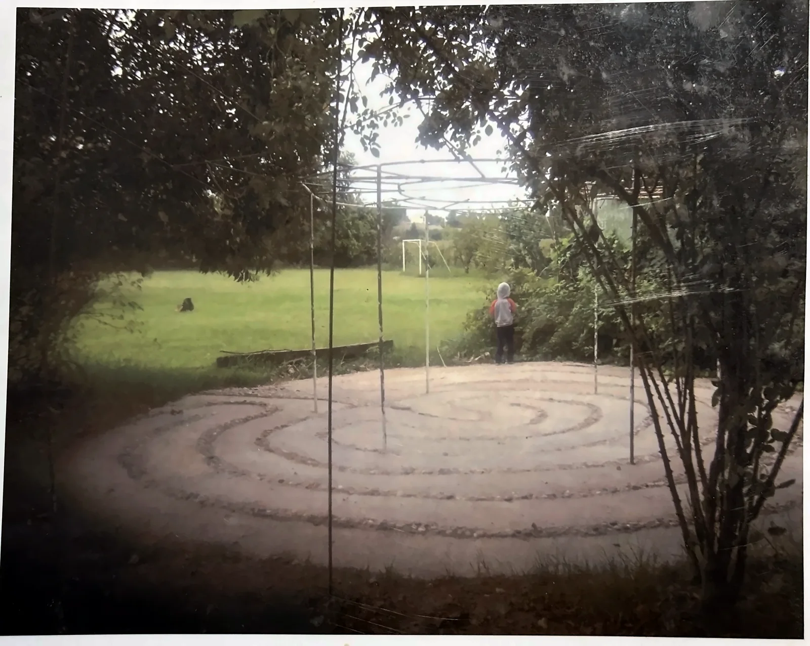
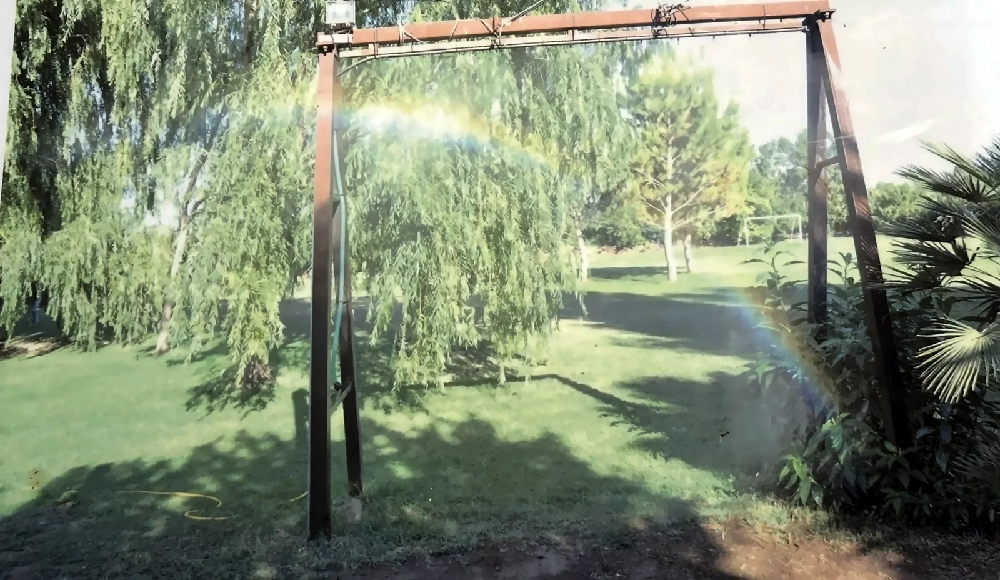
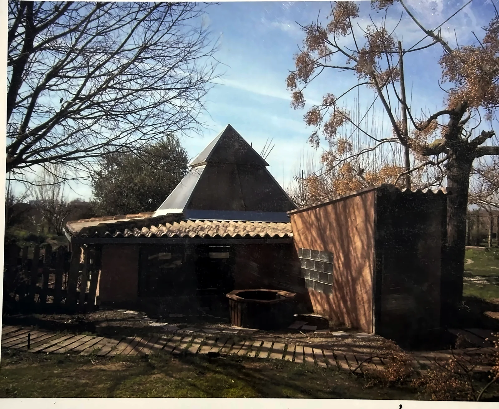
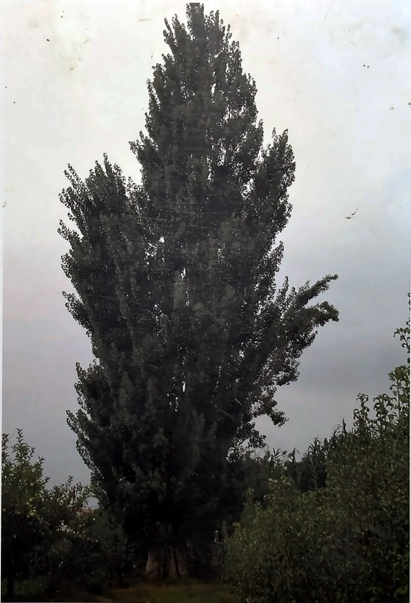

相册
El Xop 的空间
El Xop 的空间


-the sky viewpoint-

-“mother earth” labyrinth-

-Water curtain “rainbow”-

-Tools of Les Vaqueres-

-Racó d’herbes (herb corner)-

-Labyrinth “the path of life”-

-Scent point-
The black poplar (populus nigra) is a tree that signals water nearby, and its height announces it from far away.
Our poplar stands beside an irrigation channel, at the point where four owners' fields meet, which makes it a meeting place for them when it is time to water. Channels and ditches are, after all, what the Horta exists on: the irrigated farmland where we are, and which we stand up for.
And this is no ordinary poplar: it is a monumental tree, the second-largest black poplar in Catalonia, with its own ecosystem around it, a particular flora and fauna of its own.

Turn the pages with the arrows, by swiping, or by tapping the edge of the page.
Pages
- 1Cover
- 2The sky viewpoint and its mosaic floor
- 3The seven-circuit labyrinth laid in river stones, under an iron frame
- 4The water curtain among the willows, with a rainbow
- 5The museum of old farm tools
- 6The wrought-iron gate into the herb garden
- 7The labyrinth’s stone paths beneath the plane trees
- 8The little scent-point building with its well
- 9The great black poplar of El Xop